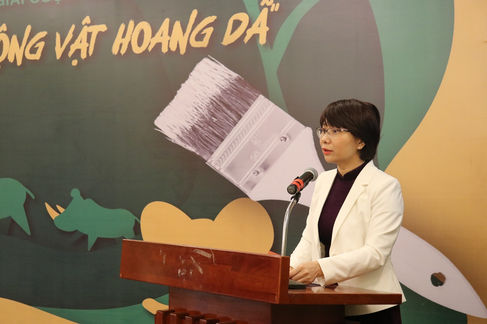
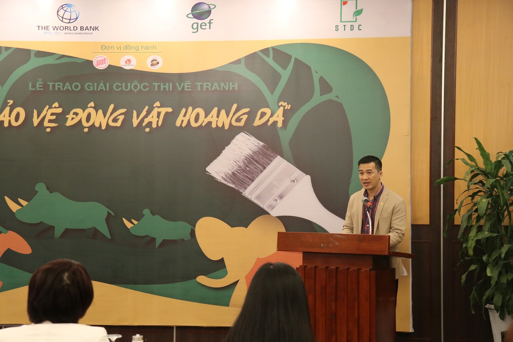

Bảo vệ động vật hoang dã (ĐVHD) là một trong những vấn đề cấp thiết hiện nay, nhiều loài động vật đang đứng trước nguy cơ bị tuyệt chủng. Theo Trung tâm giáo dục thiên nhiên (ENV), chỉ riêng 6 tháng đầu năm 2020, tổ chức này đã ghi nhận 1744 vụ vi phạm liên quan đến xâm hại Động vật hoang dã. Trong đó, có tới 687 vụ liên quan đến buôn bán; 425 vụ liên quan đến tàng trữ trái phép ĐVHD, chủ yếu là động vật còn sống. Nhiều ĐVHD đã được các cơ quan chức năng cứu hộ kịp thời bao gồm: Gấu, ngựa, vượn, vooc, cu-li, tê tê, khỉ, nhiều loài rùa cạn, rùa nước ngọt, cá mập... Việc bảo vệ ĐVHD sẽ giúp bảo vệ những nguồn gen quý hiếm, không những thế còn giúp cân bằng hệ sinh thái, đảm bảo môi trường sống bền vững cho con người.
Theo Tổ chức Y tế thế giới (WHO), khoảng 70% bệnh truyền nhiễm trong 50 năm qua đều bắt nguồn từ động vật hoang dã. Thói quen tiêu thụ động vật hoang dã đã tạo điều kiện cho nhiều virus lạ tiến sang người và gây ra những đại dịch với sức tàn phá khủng khiếp.
Bà Hoàng Thị Thanh Nhàn - Phó Cục trưởng Cục Bảo tồn thiên nhiên và Đa dạng sinh học phát biểu tại sự kiện
Từ các đại dịch trong lịch sử cho đến hiện nay là COVID-19, chúng ta đều thấy rõ được nguyên nhân đều do sự lây truyền virus từ ĐVHD sang con người. Trước đó, các đại dịch SARS (2002-2003), MERS (2012) và cả Ebola (2014) cũng đều được xác định là bắt nguồn từ loài dơi, truyền sang các động vật trung gian như cầy hương, quạ, linh trưởng và lạc đà rồi gây bệnh cho người.
Trước tình hình dịch COVID-19 diễn biến phức tạp, Tổ chức Y tế thế giới (WHO) đã lên tiếng cảnh báo về một số chủng virus corona có nguồn gốc từ động vật có thể lây truyền sang con người. Theo các nghiên cứu, SARS-CoV được truyền từ dơi sang cầy hương rồi sang người, và MERS-CoV được truyền từ lạc đà sang người…
Với mong muốn nâng cao nhận thức của toàn xã hội, đặc biệt là các bạn học sinh, sinh viên trong việc bảo vệ động vật hoang dã; thay đổi thái độ, hành vi tham gia bảo vệ các loài động vật thông qua hoạt động vẽ tranh cổ động tuyên truyền từ đó tạo ra sự chuyển biến tích cực trong việc bảo vệ ĐVHD. Tổng cục Môi trường (Bộ Tài nguyên và Môi trường); Trung tâm Truyền thông tài nguyên và môi trường; Trung tâm Hỗ trợ Phát triển Khoa học và Công nghệ; Ngân hàng Thế giới tại Việt Nam; Trung tâm Phát triển cộng đồng sinh thái cùng với các đơn vị liên quan tổ chức cuộc thi vẽ tranh cổ động “Bảo vệ động vật hoang dã" đồng hành tổ chức bởi CLB Liên Kết Trẻ Việt Nam; CLB Mỹ Thuật Trẻ trường ĐH Kiến Trúc Hà Nội; CLB Mỹ Thuật trường THPT Việt Đức.
Ông Vũ Minh Lý, Phó Giám đốc Trung tâm Truyền thông tài nguyên và môi trường - Trưởng Ban tổ chức cuộc thi chia sẻ“Nằm trong chuỗi hoạt động của khuôn khổ dự án về Bảo vệ động vật hoang dã, sau hơn 2 tháng phát động cuộc thi đã có hơn 200 tác phẩm ở các độ tuổi là học sinh THCS, THPT và Cao đẳng, Đại học trên cả nước, những tác phẩm rất ấn tượng, thể hiện tình yêu của các thí sinh đối với các loài động vật hoang dã".
Ông Vũ Minh Lý - Trưởng ban tổ chức
Hơn 200 bức tranh gửi về chương trình đến từ các tác phẩm ở nhiều tình thành khác nhau, Ban tổ chức đã lựa chọn chấm những bức tranh vẽ theo đúng thể lệ của chương trình và các bức tranh vẽ của các tác phẩm đạt giải gồm:
GIẢI NHẤT: “Tê tê vô tội" của tác giả Lâm Ngọc Huyền sinh năm 1999 và tác phẩm “Gấu con mất mẹ" của tác giả Hoàng Phước Đại sinh năm 2012.
GIẢI NHÌ:“Bảo vệ động vật là bảo vệ chính mình" của tác giả Nguyễn Xuân Quân sinh năm 2002 và tác phẩm “ Động vật cũng cần được yêu thương" của tác giả Lê Gia Hưng.
GIẢI BA: “Tàn Nhẫn" của tác giả Tạ Thùy Dương sinh năm 2002 và tác phẩm “ Thời trang tránh xa động vật" của tác giả Nguyễn Thị Xuân Cầm.
GIẢI KHUYẾN KHÍCH: “Protect The Wildlife " của tác giả Nguyễn Hồng Sơn và tác phẩm “ Vì một trái đất tươi đẹp - Hãy chung tay bảo vệ động vật hoang dã" của tác giả Trương 11Như An
Các bức tranh vẽ đều thể hiện tình yêu của con người với các loài động vật hoang dã và những bức tranh cũng phác họa hệ sinh thái xung quanh chúng ta, cũng như tình yêu thiên nhiên, yêu động vật và muôn loài và bảo vệ các loài động vật.
Những bức tranh đạt tiêu chuẩn theo ban tổ chức chấm giải đã được ban tổ chức triển lãm tại chương trình và được sử dụng làm tư liệu truyền thông trong các chiến dịch sắp tới.